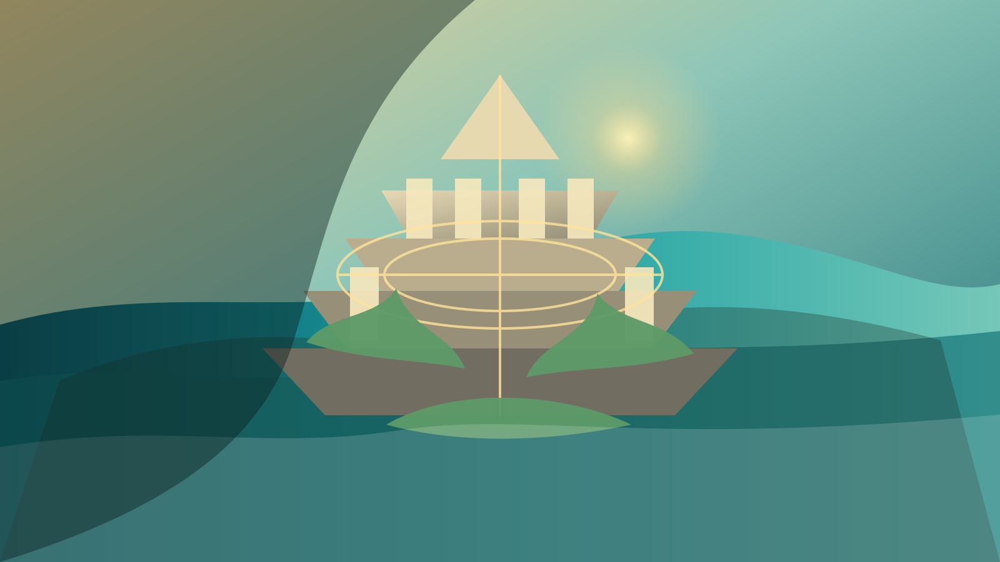

UAP / 古代文明
UAP開示と超古代文明をめぐる物語
ケネディ政権関係者の証言、開示運動、超古代文明説、物語の力をめぐる会話メモ。

Journal
ケネディ政権関係者の証言、開示運動、超古代文明説、物語の力をめぐる会話メモ。
公的な透明化、科学的検証、世界観の変化を怖がらずに見つめる。
古代文明のロマン、現代の検証、自然再生への希望を分けながら読む。

信仰、芸術、火山の記憶、伏流水。日本の象徴を楽しく、やさしく読み直す。
神話、海洋文明、記憶の断片から、今を明るくする想像力を受け取る序章。
土、水、光、地域の記憶。暮らしの近くで世界が回復する兆しを見つける。
Themes
忘れられた土地の記憶、古代文明、神話、口承を、想像を楽しみながら読み直します。
フリーエネルギーや発明史を、夢と観察の両方を大切にしながら眺めます。
水脈、土壌、植生、循環する暮らしをテーマに、小さな希望の実践を集めます。
About
このサイトは、過去にこんな歴史があったかもしれないと楽しく思いを馳せながら、 自然や暮らしや人の心が少しずつ良い方向へ向かうヒントを集める場所です。 断定よりも余白を、対立よりも好奇心を大切にして、読後にやさしい行動がひとつ増えるような記事を公開していきます。